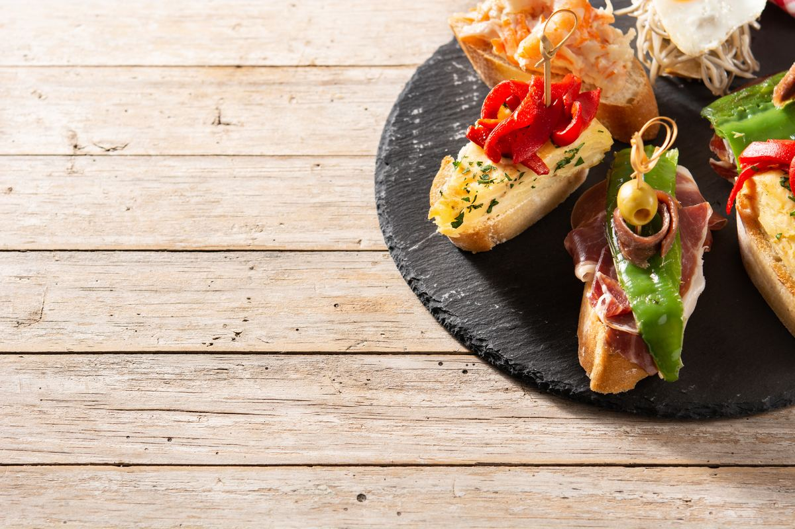
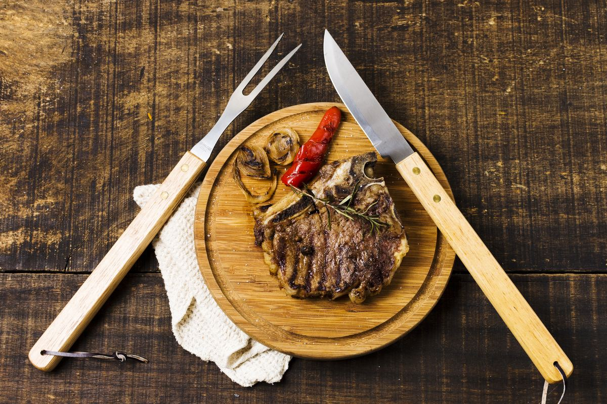
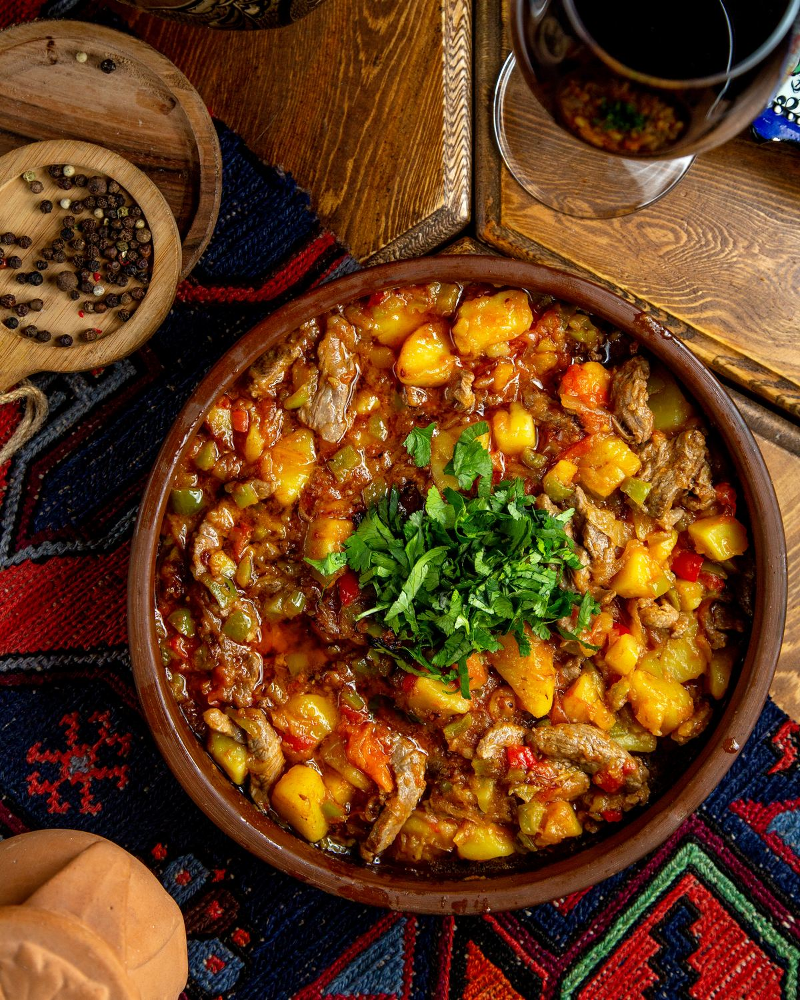
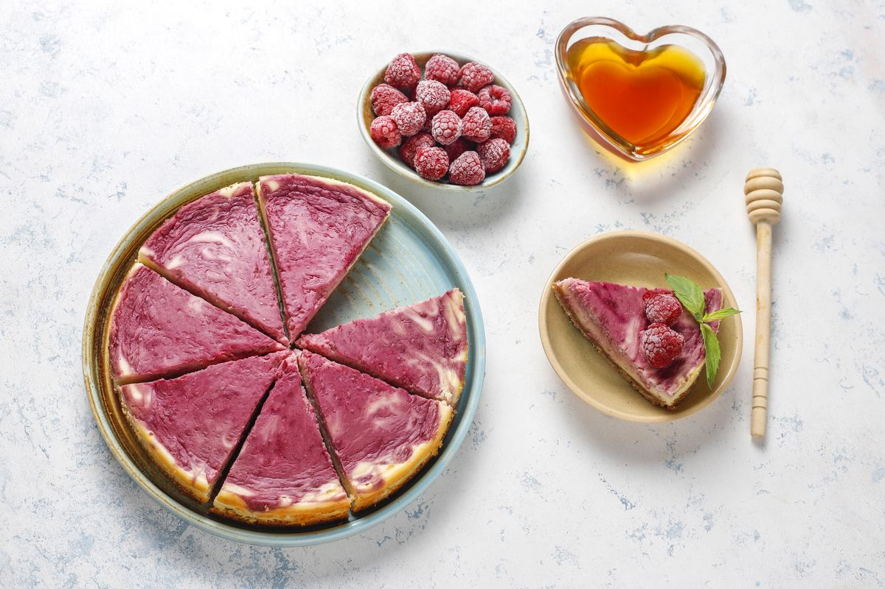

Entrantes y pintxos
Para empezar compartiendo: lo que pida la temporada y lo que nunca puede faltar en la barra.
desde 3,50 €
Cocina honesta y de temporada, servida sin prisas. Un sitio para comer bien, celebrar lo que haga falta y volver. Reserva por teléfono o WhatsApp y te guardamos la mesa.
De esos sitios que se recomiendan en voz baja, de amigo a amigo. Cocina de casa, producto del mercado y una sala donde nadie te mete prisa: lo de siempre, hecho como se debe.
El producto manda, la receta la pone la costumbre y el tiempo lo pone la cocina. Así se come en Taberna La Concha.
Taberna La Concha es una casa de comidas de Madrid: compra diaria, guisos que empiezan temprano y una sala en la que se entra y se saluda. Nada de artificios. Buen género, el punto justo y la paciencia de hacer las cosas como se han hecho siempre.
La carta cambia con el mercado y con la estación, porque el mejor plato es el que toca hoy. Y la sobremesa, que aquí también es parte de la comida, dura lo que tenga que durar.
Esta página es una propuesta de cómo podría presentarse el restaurante en internet: con su carta, su horario, sus fotos y las reservas a un toque de teléfono. Los textos, las fotos y los precios de muestra se sustituyen por los reales del negocio.


Una idea de cómo luciría la carta de Taberna La Concha en su web: por secciones, con foto y al día. Cambiar un plato o un precio llevaría un minuto.

Para empezar compartiendo: lo que pida la temporada y lo que nunca puede faltar en la barra.
desde 3,50 €
Cremosas por dentro, doradas por fuera. De las que se pide otra ración sin mirar la carta.
9,50 €
Carnes hechas en su punto, con paciencia y buena materia prima. El plato fuerte de la casa.
18,90 €
Guisos de puchero que saben a domingo en casa. El plato que cambia con el mercado y la estación.
13,50 €
Hechos aquí, como todo lo demás. Para cerrar la comida con el café y la sobremesa que merece.
desde 5,00 €
Vinos bien elegidos para acompañar la mesa, del blanco fresco de la zona al tinto de siempre.
desde 2,50 €Sin secretos: buen producto, cocina con tiempo y una sala que cuida a quien se sienta.
Cuatro pasos y ninguno se salta. Es lo único que hace falta para que una comida se recuerde.
Compra diaria y de temporada. Lo que no convence, no entra en la cocina.
Recetas de casa hechas con tiempo, que es el ingrediente que no se puede comprar.
Mesa puesta, vino servido y nadie mirando el reloj. Aquí se viene a estar bien.
Café, postre y conversación. La parte de la comida que no sale en la cuenta.
Para que nadie se plante en la puerta un lunes. El día de hoy va marcado.
| Lunes | Cerrado |
| Martes | 12:00 a 16:00 |
| Miércoles | 12:00 a 16:00 |
| Jueves | 12:00 a 16:00 · 19:30 a 23:00 |
| Viernes | 12:00 a 16:00 · 19:30 a 23:30 |
| Sábado | 12:00 a 16:30 · 19:30 a 23:30 |
| Domingo | 12:00 a 16:30 |
Con una web así, quien busque Taberna La Concha en el móvil encuentra el horario, la carta y el botón de reservar en cinco segundos. Una llamada o un WhatsApp, y mesa guardada.
Si trabajáis con grupos, menús del día o celebraciones, también tendrían aquí su sitio.
Estamos en Madrid (Madrid). Reserva por teléfono o WhatsApp y te esperamos con la mesa puesta.
Los fines de semana es lo más seguro. Puedes reservar llamando al 616 91 06 71 o por WhatsApp, y te guardamos la mesa.
Sí: cuadrillas, familias y celebraciones. Cuéntanos cuántos sois y lo preparamos.
Avísanos al reservar o al pedir y te orientamos con la carta sin problema.
En Madrid (Madrid). Tienes el mapa aquí mismo, un poco más arriba.
No: es una maqueta de demostración preparada por G&G Elcano. Los textos, fotos, carta y horario de muestra se sustituyen por los reales del restaurante.
Se ve que aquí no había nada. No pasa nada: volvemos a la mesa.
Volver al inicio